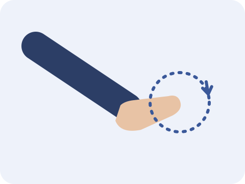
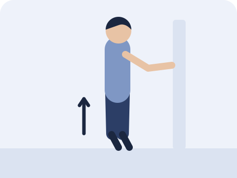
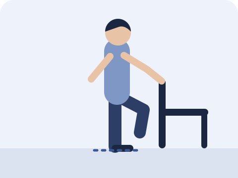

In this article
Landed on someone's foot during a game, or missed a step on a hike, and your ankle rolled and swelled? This article explains how to manage an ankle sprain.
First: rule out a fracture
After a sprain, the first priority is to rule out a fracture. Doctors often use the Ottawa ankle rules to decide whether an X-ray is needed. Research shows these rules reliably rule out fractures of the ankle and mid-foot and reduce unnecessary X-rays.
Seek medical advice first if
- You cannot walk four steps on your own, both immediately after the injury and when you are seen
- The back edge or tip of the bone on the inside or outside of the ankle is clearly tender
- The middle of the outer edge of the foot (base of the fifth metatarsal) or the inner side of the mid-foot (navicular) is clearly tender
- Your foot is numb, changes colour or feels cold
The first few days
Research supports early movement: start walking and moving the ankle as soon as possible, within what the pain allows.
Research also shows that an examination four to five days after the injury gives a more reliable picture of how badly the ligaments are injured.
After a sprain, the focus is on retraining the ankle's stability and balance.
Guidelines recommend exercise as the main treatment, as it helps the ankle regain stability better than passive treatments alone.
Three ankle rehabilitation exercises
Begin within what the pain allows and progress from easier to harder. The numbers below are a starting point only.

Ankle circles
Sit with your leg extended. Slowly draw circles, or the letters of the alphabet, in the air with your toes.
10 circles in each direction

Calf raise
Holding a wall or the back of a chair, slowly rise onto your toes, then slowly lower.
10 times | 2–3 sets

Single-leg balance
Holding a wall or the back of a chair, stand on your injured leg. Once steady, try letting go.
30 seconds | Repeat 3 times
Points to note
- Stay within what the pain allows, and move slowly.
- When balancing on one leg, keep something to hold on to nearby.
- Before returning to ball sports or hiking, make sure you can balance on one leg, rise onto your toes and jog without clear pain.
Common questions
Can I walk on a sprained ankle?
If you can bear weight, research supports early movement within what the pain allows. If you cannot walk four steps on your own, seek medical advice first.
Why do I keep spraining my ankle?
After one sprain, the risk of another is higher. Research shows that balance training and an ankle brace help reduce the risk of spraining it again.
Do I need an ankle brace?
Research shows that a brace helps prevent repeat sprains. Whether you need one, and for how long, is worth discussing with a physiotherapist.
References
- Vuurberg G, et al. Diagnosis, treatment and prevention of ankle sprains: update of an evidence-based clinical guideline. Br J Sports Med 2018;52(15):956. PubMed
- Doherty C, et al. Treatment and prevention of acute and recurrent ankle sprain: an overview of systematic reviews with meta-analysis. Br J Sports Med 2017;51(2):113–125. PubMed
- Bachmann LM, et al. Accuracy of Ottawa ankle rules to exclude fractures of the ankle and mid-foot: systematic review. BMJ 2003;326(7386):417. PubMed

Anson Ko 高浩維
Registered Physiotherapist, seeing patients at Amazing Medical, Tsim Sha Tsui.About me
This article is for general reference only and does not replace professional diagnosis or treatment. If symptoms persist or warning signs appear, please see a doctor or physiotherapist.